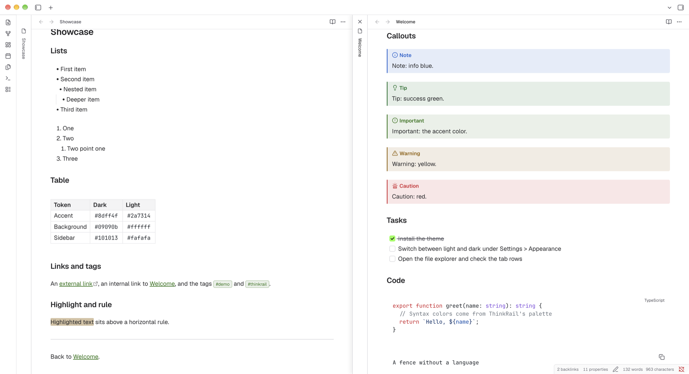
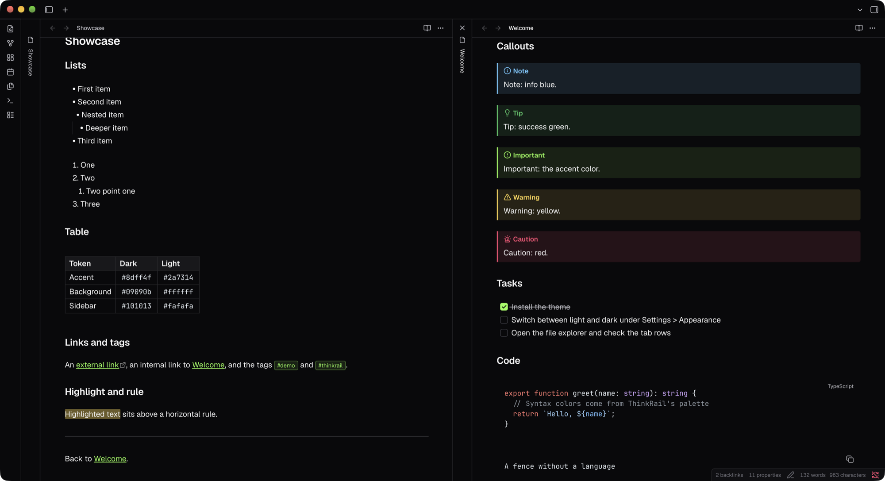

ThinkRail, for Obsidian
A flat, quiet Obsidian theme that follows the design of ThinkRail: zinc surfaces, a neon green accent, Geist for text and JetBrains Mono for code. Dark and light.
Unofficial. Not affiliated with or endorsed by JetBrains.

Install
TBD
Fonts
The theme uses ThinkRail's fonts but does not bundle them. Install them on your system and the theme picks them up. Without them it falls back to your system fonts.
Recommended: download the whole family from each page and install it with its italics. The theme uses weights 400 (Regular), 500 (Medium) and 600 (SemiBold), so install at least those. Restart Obsidian after installing.
On macOS you can install both with Homebrew instead:
brew install --cask font-jetbrains-mono
brew install --cask font-geistOptions
Install the Style Settings plugin to configure the theme under Settings, Style Settings, JetBrains ThinkRail.
- Property lines is a dropdown for the Properties block at the top of a note: hide lines (default), a solid or dotted line from each name to its value, or zebra striping across every other row.
- Property line gap sets the space on each side of the line, from 0 to 16px.
Both color schemes
